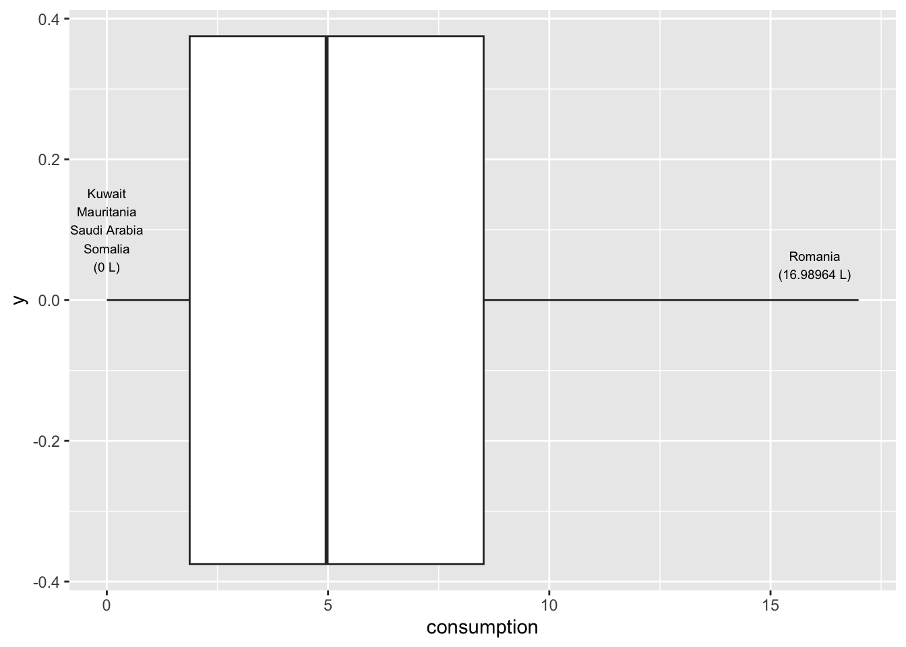

ggplot(eqls_2011, aes(x = country_name))
The best way to understand how participants in your study have responded to various questions or experimental treatments is to use descriptive statistics. As the name indicates, their main purpose is to ‘describe’. Most of the time, we want to describe the composition of our sample and how the majority (or minority) of participants performed.
In contrast, we use inferential statistics to make predictions. In Social Sciences, we are often interested in predicting how people will behave in certain situations and scenarios. We aim to develop models that help us navigate the complexity of social interactions that we all engage in but might not fully understand. We cover inferential statistics in later chapters of this book.
In short, descriptive statistics are an essential component to understand your data. To some extent, one could argue that we were already describing our data when we performed various data wrangling tasks (see Chapter 7). The following chapters focus on essential descriptive statistics, i.e. those you likely want to investigate in 99.9 out of 100 research projects.
This book takes a ‘visualised’ approach to data analysis. Therefore, each section will entail data visualisations and statistical computing. A key learning outcome of this chapter is to plot your data using the package ggplot2 and present your data’s characteristics in different ways. Each chapter will ask questions about our dataset that we aim to answer visually and computationally. However, first, we need to understand how to create plots in R.
ggplot2Plotting can appear intimidating at first but is very easy and quick once you understand the basics. The ggplot2 package is a very popular package to generate plots in R, and many other packages are built upon it. This makes it a very flexible tool to create almost any data visualisation you could imagine. If you want to see what is possible with ggplot2, you might want to consider looking at #tidytuesday on Twitter, where novices and veterans share their data visualisations every week.
To generate any plot, we need to define three components at least:
a dataset,
variables we want to plot, and
a function to indicate how we want to plot them, e.g. as lines, bars, points, etc.
Admittedly, this is a harsh oversimplification, but it will serve as a helpful guide to get us started. The function ggplot() is the one responsible for creating any type of data visualisation. The generic structure of a ggplot() looks like this:
ggplot(data, aes(x = variable_01, y = variable_02))
In other words, we first need to provide the dataset data, and then the aesthetics (aes()). Think of aes() as the place where we define our variables (i.e. x and y). Let’s have a look at an example of how to create a plot and how they matter when conducting descriptive statistics.
As mentioned earlier, when we collect data, it is essential to analyse descriptive statistics to better understand the characteristics of our study’s participants. For instance, if we aim to assess whether people express trust in others, this might depend on factors such as the country of origin. In such cases, it is crucial to first determine how many individuals in our dataset participated from each country, as this understanding could influence our analysis and the conclusions we draw. The dataset eqls_2011 from the r4np package holds information about how much people think one can trust others and includes data from various European countries. To understand which countries are included and how many people completed the questionnaire we can create a barplot. For our ggplot() function we first define the components of the plot as follows:
our data is eqls_2011, and
our variable of interest is country_name.
ggplot(eqls_2011, aes(x = country_name))
Running this line of code will produce an empty plot. We only get labels for our x-axis since we defined it already. However, we have yet to tell ggplot() how we want to represent the data on this canvas. Your choice for how you want to plot your data is usually informed by the type of data you use and the statistics you want to represent. For example, plotting the mean of a factor is not meaningful, e.g. computing the mean of country_name. On the other hand, we can count how often specific genres appear in our dataset. One way of representing a factor’s count (or frequency) is to use a bar plot. To add an element to ggplot(), i.e. bars, we use + and append the function geom_bar(), which draws bars. The + operator works similar to |> and allows to chain multiple functions one after the other as part of a ggplot().
ggplot(eqls_2011, aes(x = country_name)) +
geom_bar()
With only two lines of coding, we created a great looking plot. Well, not quite. When working with factors, the category names can be rather long. In this plot, we have lots of categories, and all labels are bit too close to each other to be legible. This might be an excellent opportunity to use coord_flip(), which rotates the entire plot by 90 degrees, i.e. turning the x-axis into the y-axis and vice versa. This makes the labels much easier to read.
ggplot(eqls_2011, aes(x = country_name)) +
geom_bar() +
coord_flip()
Now we can see that NA is by far the longest bar, followed by Germany and France, Italy, Poland and the United Kingdom. Thus, a large amount of participants did not indicate which country they are from. Also, it seems there are much more Germans included in this dataset than other countries. For this large dataset this would not necessarily constitute a threat to representativeness of the data. It is, however, concerning that for a large group of participants the country-of-origin remains unknown. If we were to analyse the data further, it would be good to acknowledge such a shortcoming.
Our plot, while informative, is not finished, because it lacks formatting. Plots intended for any publication should be self-explanatory and reader-friendly. We can use + to add other elements to our plot, such as a title, subtitle, and proper axes labels. Here are some common functions to further customise our plot:
ggplot(eqls_2011, aes(x = country_name)) +
geom_bar() +
coord_flip() +
ggtitle("Country representation", # Add a title
subtitle = "The EQLS 2011 dataset") + # Add a sub-title
xlab("country") + # Rename x-axis
ylab("frequency") # Rename y-axis
Our plot is almost perfect, but we should take one more step to make reading and understanding this plot even easier. At the moment, the bars are ordered randomly. Unfortunately, this is hardly ever a useful way to order your data. Instead, we might want to sort the data by frequency, showing the largest bar at the top. To achieve this, we could either sort the countries by hand (see Section 7.5.2) or slightly amend what we have coded so far.
The problem you encounter when rearranging a geom_bar() with only one variable is that we do not have an explicit value to indicate how we want to sort the bars. Our current code is based on the fact that ggplot does the counting for us. So, instead, we need to do two things:
create a table with all countries and their frequency, and
use this table to plot the countries by the frequency we computed
# Step 1: The frequency table only
eqls_2011 |> count(country_name)# A tibble: 32 × 2
country_name n
<fct> <int>
1 Austria 1032
2 Belgium 1013
3 Bulgaria 1000
4 Cyprus 1006
5 Czech Republic 1012
6 Germany 3055
7 Denmark 1024
8 Estonia 1002
9 Greece 1004
10 Spain 1512
# ℹ 22 more rows# Step 2: Plotting a barplot based on the frequency table
eqls_2011 |>
count(country_name) |>
ggplot(aes(x = country_name, y = n)) +
# Use geom_col() instead of geom_bar()
geom_col() +
# Rotate plot by 180 degrees
coord_flip() +
# Add titles for plot
ggtitle("Country representation", # Add a title
subtitle = "The EQLS 2011 dataset") + # Add a sub-title
xlab("country") + # Rename x-axis
ylab("frequency") # Rename y-axis 
#Step 3: reorder() country_name by frequency, i.e. by 'n'
eqls_2011 |>
count(country_name) |>
ggplot(aes(x = reorder(country_name, n),
y = n)) +
geom_col() +
coord_flip() +
ggtitle("Country representation",
subtitle = "The EQLS 2011 dataset") +
xlab("country") +
ylab("frequency")
Step 3 is the only code you need to create the desired plot. The other two steps only demonstrate how one can slowly build this plot, step-by-step. You might have noticed that I used dplyr to chain all these functions together (i.e. |>), and therefore, it was not necessary to specify the dataset in ggplot().
There are also two new functions we had to use: geom_col() and reorder(). The function geom_col() performs the same step as geom_bar() which can be confusing. The easiest way to remember how to use them is: If you use a frequency table to create your barplot, use geom_col(), if not, use geom_bar(). The function geom_col() requires that we specify an x-axis and a y-axis (our frequency scores), while geom_bar() works with one variable.
In many cases, when creating plots, you have to perform two steps:
generate the statistics you want to plot, e.g. a frequency table, and
plot the data via ggplot()
Now you have learned the fundamentals of plotting in R. We will create a lot more plots throughout the next chapters. They all share the same basic structure, but we will use different geom_s to describe our data. By the end of this book, you will have accrued enough experience in plotting in R that it will feel like second nature. If you want to deepen your knowledge of ggplot, you should take a look at the book ‘ggplot: Elegant Graphics for Data Analysis’ or ‘R Graphics Cookbook’ which moves beyond ggplot2. Apart from that, you can also find fantastic packages which extend the range of ‘geoms’ you can use in the ‘ggplot2 extensions gallery’.
One of the most fundamental descriptive statistics includes frequencies, i.e. counting the number of occurrences of a factor level, string or numeric value. We already used the required function to compute such a frequency when we looked at the representation of countries in the eqls_2011 dataset (see Section 8.1), i.e. count().
eqls_2011 |> count(country_name)# A tibble: 32 × 2
country_name n
<fct> <int>
1 Austria 1032
2 Belgium 1013
3 Bulgaria 1000
4 Cyprus 1006
5 Czech Republic 1012
6 Germany 3055
7 Denmark 1024
8 Estonia 1002
9 Greece 1004
10 Spain 1512
# ℹ 22 more rowsThe result indicates that our participants are from 32 different countries. If we are only interested in top countries, we could filter() our dataset and include only countries that had more than 1500 participants. My choice of 1500 is entirely arbitrary and you can change the value to whatever you prefer and is meaningful to your analysis.
eqls_2011 |>
count(country_name) |>
filter(n >= 1500)# A tibble: 8 × 2
country_name n
<fct> <int>
1 Germany 3055
2 Spain 1512
3 France 2270
4 Italy 2250
5 Poland 2262
6 Romania 1542
7 United Kingdom 2252
8 <NA> 4119There are in total 7 countries which had more than 1500 people represented in the dataset.
Besides absolute frequencies, i.e. the actual count of occurrences of a value, we sometimes wish to compute relative frequencies to make it easier to compare categories more easily. Relative frequencies are more commonly known as percentages which indicate the ratio or proportion of an occurrence relative to the total number of observations. Let’s have a look at employment in the eqls_2011 dataset and find out how many participants were employed, retired, a student, etc..
eqls_2011 |> count(employment)# A tibble: 7 × 2
employment n
<fct> <int>
1 Student 2490
2 Retired 12853
3 Unemployed 3540
4 Unable to work - disability/illness 897
5 Employed (includes on leave) 19376
6 Other 666
7 Homemaker 3814The table indicates that Employed (includes on leave) and Retired constitute the largest categories. In a next step we can compute the absolute and relative frequencies at once by creating a new variable with mutate() and the formula to calculate percentages, i.e. n / sum(n).
eqls_2011 |>
count(employment) |>
# add the relative distributions, i.e. percentages
mutate(perc = n / sum(n))# A tibble: 7 × 3
employment n perc
<fct> <int> <dbl>
1 Student 2490 0.0571
2 Retired 12853 0.295
3 Unemployed 3540 0.0811
4 Unable to work - disability/illness 897 0.0206
5 Employed (includes on leave) 19376 0.444
6 Other 666 0.0153
7 Homemaker 3814 0.0874It seems we have a very uneven distribution of employment categories. Thus, our analysis is affected by having more 44.4% of employed and 29.5% of retired participants in our dataset. Together, these two groups account for 73.9% of our entire sample. Consequently, any further computation we perform with this dataset would predominanly reflect the opinion of Employed (includes on leave) and Retired survey takers. This is important to know because it limits the representativeness of our results. The insights gained from primarily employed participants in this study will not be helpful when trying to understand unemployed individuals in the population. Therefore, understanding who the participants are in your study is essential before undertaking any further analysis. Sometimes, it might even imply that we have to change the focus of our study entirely.
The mean, median and mode (the 3 Ms) are all measures of central tendency, i.e. they provide insights into how our data is distributed. Measures of central tendency help to provide insights into the most frequent/typical scores we can observe in the data for a given variable. All the 3Ms summarise our data/variable by a single score which can be helpful but sometimes also terribly misleading.
The mean is likely the most known descriptive statistics and, at the same time, a very powerful and influential one. For example, the average ratings of restaurants on Google might influence our decision on where to eat out. Similarly, we might consider the average rating of movies to decide which one to watch in the cinema with friends. Thus, what we casually refer to as the ‘average’ is equivalent to the ‘mean’.
In R, it is simple to compute the mean using the function mean(). We used this function in Section 5.3 and Section 7.8 already. However, we have not looked at how we can plot the mean.
Assume we are curious to know in which country people feel they can trust others the most, i.e. a similar question we raised in Chapter Section 8.1 . The mean could be a good starting point to answer this question because it provides the ‘average’ level of trust people have in others on a scale from 1 (You cannot be too careful) to 10 (Most people can be trusted). The simplest approach to investigating this is using a bar plot, like in Section 8.1. So, we first create a table that contains the means of the variable trust_people for each country in country_name. Then we use this table to plot a bar plot with geom_col().
eqls_2011 |>
# Group data by country
group_by(country_name) |>
# Compute the mean for each group (remove NAs via na.rm = TRUE)
summarise(mean_trust = mean(trust_people, na.rm = TRUE)) |>
# Create the plot
ggplot(aes(x = reorder(country_name, mean_trust), y = mean_trust)) +
geom_col() +
coord_flip()
You will have noticed that we use the function summarise() instead of mutate(). The summarise() function is a special version of mutate(). While mutate() returns a value for each row, summarise condenses our dataset, e.g. turning each row of observations into scores for each genre. Here is an example of a simple dataset which illustrates the difference between these two functions.
# Create a simple dataset from scratch with tibble()
(data <- tibble(number = c(1, 2, 3, 4, 5),
group = factor(c("A", "B", "A", "B", "A"))))# A tibble: 5 × 2
number group
<dbl> <fct>
1 1 A
2 2 B
3 3 A
4 4 B
5 5 A # Return the group value for each observation/row
data |>
group_by(group) |>
mutate(sum = sum(number))# A tibble: 5 × 3
# Groups: group [2]
number group sum
<dbl> <fct> <dbl>
1 1 A 9
2 2 B 6
3 3 A 9
4 4 B 6
5 5 A 9# Returns the group value once for each group
data |>
group_by(group) |>
summarise(sum = sum(number))# A tibble: 2 × 2
group sum
<fct> <dbl>
1 A 9
2 B 6Considering the results from our country plot, it appears as if Finland and Denmark are far ahead of the rest. On average, both countries score around 7/10 with regards to being able to trust other people in their country. We can retrieve the exact means by removing the plot from the above code.
eqls_2011 |>
group_by(country_name) |>
summarise(mean_trust = mean(trust_people, na.rm = TRUE)) |>
arrange(desc(mean_trust))# A tibble: 32 × 2
country_name mean_trust
<fct> <dbl>
1 Finland 7.17
2 Denmark 7.01
3 Sweden 6.41
4 Iceland 6.33
5 Luxembourg 5.92
6 Ireland 5.54
7 United Kingdom 5.50
8 Belgium 5.47
9 Spain 5.41
10 France 5.32
# ℹ 22 more rowsIn the last line, I used a new function called arrange(). It allows us to sort rows in our dataset by a specified variable (i.e. a column). By default, arrange() sorts values in ascending order, putting the country with the highest mean_trust last. Therefore, we have to use another function to change the order to descending with desc() to see the counrty with the highest score first. The function arrange() works similarly to reorder() but is used for sorting variables in data frames and less so for plots.
Lastly, I want to show you another very handy function that allows you to create tables and plots which only feature the Top 3/5/10 countries in our list. This can sometimes be handy if there are many categories, but you want to focus the attention of your analysis on the biggest ones (or the smallest ones). Here is what we can do:
eqls_2011 |>
group_by(country_name) |>
summarise(mean_trust = mean(trust_people, na.rm = TRUE)) |>
slice_max(order_by = mean_trust,
n = 5)# A tibble: 5 × 2
country_name mean_trust
<fct> <dbl>
1 Finland 7.17
2 Denmark 7.01
3 Sweden 6.41
4 Iceland 6.33
5 Luxembourg 5.92The new function from dplyr called slice_max() allows us to pick the top 5 countries in our data. So, if you have many rows in your data frame (remember there are 32 countries), you might want to be ‘picky’ and report only the top 3, 4 or 5. As you can see, slice_max() requires at least to arguments: order_by which defines the variable your dataset should be sorted by, and n which defines how many rows should be selected, e.g. n = 3 for the top 3 countries or n = 10 for the top 10 countries If you want to pick the lowest observations in your dataframe, you can use slice_min(). There are several other ‘slicing’ functions that can be useful and can be found on the corresponding dplyr website.
In conclusion, Nordic countries (Finland, Denmark, Sweden and Iceland) report the highest levels of trust in other people in Europe. However, even though the mean is a great tool to understand tendencies in your data, it can be heavily affected by other factors and lead to misleading results. Some of these issues will be exemplified and discussed in Chapter 9.
The ‘median’ is the little, for some, lesser-known and used brother of the ‘mean’. However, it can be a powerful indicator for central tendency because it is not so much affected by outliers. With outliers, I mean observations that lie way beyond or below the average observation in our dataset.
Assume we are curious to find out whether people in Germany, France or Greece work longer (not harder!) hours per week. We first filter() our dataset to only show participants who are from one of the selected countries and provided information about their working hours. The latter we can achieve by using the opposite (i.e. !) of the function is.na() for the variable working_hrs.
# Select only Nordic countries with no missing data for 'work_hrs'
eqls_comp <-
eqls_2011 |>
filter(country_name == "Germany" |
country_name == "Finland" |
country_name == "Greece"
) |>
filter(!is.na(work_hrs))We now can compute the means for each country and obtain the average working hours, like we did in our previous example.
# Mean working hours for Nordic countries
eqls_comp |>
group_by(country_name) |>
summarise(mean = mean(work_hrs, na.rm = TRUE)) |>
arrange(desc(mean))# A tibble: 3 × 2
country_name mean
<fct> <dbl>
1 Greece 44.3
2 Finland 40.4
3 Germany 38.1Based on these insights, we have to conclude that Greece is the country where people work the longest, up to about 6 hours more per week than in Germany. However, if use a different measure of central tendency, for example the median, the results change drastically.
# Median working hours for Nordic countries
eqls_comp |>
group_by(country_name) |>
summarise(median = median(work_hrs, na.rm = TRUE)) |>
arrange(desc(median))# A tibble: 3 × 2
country_name median
<fct> <dbl>
1 Germany 40
2 Greece 40
3 Finland 40The result is striking. The results based on the median suggest that all three countries work the same amount of working hours. This is because the median sorts a dataset, e.g. by work_hrs and then picks the value that would cut the data into two equally large halves. It does not matter which value is the highest or lowest in our dataset. What matters is the value that is ranked right in the middle of all values. The median splits your dataset into two equally large datasets.
You might feel confused now and wonder which measure you should choose to accurately report your research findings. In general, when we report means, it is advisable to report the median as well. If a mean and median differ substantially, it could imply that your data ‘suffers’ from outliers. So we have to detect them and think about whether we should remove them for further analysis (see Section 9.6). I hope it is evident that reporting the mean only could lead to wrong conclusions because of data that is biased.
We can visualise medians using boxplots. Boxplots are a very effective tool to show how your data is distributed in one single data visualisation, and it offers more than just the median. It also shows the spread of your data (see Section 8.4) and possible outliers. Let’s create one for Greece to better understand why the differences between mean and median are so large.
eqls_comp |>
filter(country_name == "Greece") |>
ggplot(aes(x = work_hrs)) +
geom_boxplot()
To interpret this boxplot consider Figure Figure 8.1. Every boxplot consists of a ‘box’ and two whiskers (i.e. the lines leading away from the box). The distribution of data can be assessed by looking at different ranges:
MINIMUM to Q1 represents the bottom 25% of our observations,
Q1 to Q3, also known as the interquartile range (IQR) defines the middle 50% of our observations, and
Q3 to MAXIMUM, contains the top 25% of all our data.
Thus, with the help of a boxplot, we can assess whether our data is evenly distributed across these ranges or not. If observations fall outside a certain range (i.e. 1.5 * IQR) they are classified as outliers. We cover outliers in great detail in Section 9.6.
Considering our boxplot, it shows that we have about 16 observations that are considered outliers. If we wanted to see each of the participants’ score mapped on top of this boxplot, we can overlay another geom_. We can represent each participant as a point by using geom_point(). This function requires us to define the values for the x and y-axis. Here it makes sense to set y = 0, which aligns all the dots in the middle of the boxplot.
eqls_comp |>
filter(country_name == "Greece") |>
ggplot(aes(x = work_hrs)) +
geom_boxplot() +
# Add an additional layer of data visualisation
geom_point(aes(y = 0, col = "red"),
show.legend = FALSE)
To make the dots stand out more, I changed the colour to "red". By adding the col attribute (color and colour also work), ggplot2 would automatically generate a legend. Since we do not need it, we can specify it directly in the geom_point() function. If you prefer the legend, remove show.legend = FALSE.
This plot nicely demonstrates why boxplots are so popular and helpful: They provide so many insights, not only into the central tendency of a variable, but also highlight outliers and, more generally, give a sense of the spread of our data (more about this in Section 8.4).
In conclusion, the median is an important descriptive and diagnostic statistic and should be included in most empirical quantitative studies. Failing to do so could not only harm the reliability of your results, but also your reputation as an analyst.
Finally, the ‘mode’ indicates which value is the most frequently occurring value for a specific variable. This can apply to any type of variable, numeric, categorical, etc. and makes it a special indicator of central tendency. For example, we might be interested in knowing which age category is the most frequently represented one in our eqls_2011 dataset.
When trying to compute the mode in R, we quickly run into a problem because there is no function available to do this straight away unless you search for a package that does it for you. However, before you start searching, let’s reflect on what the mode does and why we can find the mode without additional packages or functions. As a matter of fact, we found the mode multiple times in this chapter already, but we were just not aware of it. The mode is based on the frequency of the occurrence of a value. Thus, the most frequently occurring value would be the one that is listed at the top of a frequency table. We have already created several frequency tables in this book, and we can create another one to find the answer to our question.
eqls_2011 |> count(age_category)# A tibble: 5 × 2
age_category n
<ord> <int>
1 18-24 4166
2 25-34 6630
3 35-49 11265
4 50-64 11178
5 65+ 10397We can also easily visualise this frequency table in the same way as before. To make the plot a bit more ‘fancy’, we can add labels to the bar which reflect the frequency of the rating. We need to add the attribute label and also add a geom_text() layer to display them. Because the numbers would overlap with the bars, I ‘nudge’ the labels up by 500 units on the y-axis.
eqls_2011 |>
count(age_category) |>
ggplot(aes(x = age_category,
y = n,
label = n)) +
geom_col() +
geom_text(nudge_y = 500)
The frequency table and the plot reveal that the mode for age_category is 35-49. In addition, we also get to know how many participants fall into this category, i.e. 11265. The table and plot provide much more information than receiving only a single score and helps better interpret the importance of the mode as an indicator for a central tendency. Consequently, there is generally no need to compute the mode if you can have a frequency table instead. Still, if you are keen to have a function that computes the mode, you will have to write your own function, e.g. as shown in this post on stackeroverflow.com or search for a package that coded one already.
As a final remark, it is also possible that you can find two or more modes in your data. For example, if the age category 50-64 also included 11265 participants, both would be considered a mode.
Understanding how your data is spread out is essential to get a better sense of what your data is composed of. We already touched upon the notion of spread in Section 8.3.2 through plotting a boxplot. Furthermore, the spread of data provides insights into how homogeneous or heterogeneous our participants’ responses are. The following will cover some essential techniques to investigate the spread of your data and investigate whether our variables are normally distributed, which is often a vital assumption for specific analytical methods (see Chapter 9. In addition, we will aim to identify outliers that could be detrimental to subsequent analysis and significantly affect our modelling and testing in later stages.
The boxplot is a staple in visualising descriptive statistics. It offers so much information in just a single plot that it might not take much to convince you that it has become a very popular way to show the spread of data.
For example, we might be interested to know how much alcohol people drink on average. We could imagine that there are some people who barely drink alcohol, some who might drink a moderate amount and others who consume an unhealthy amount. If we assumed that a person drinks about 250-500 ml of alcohol every month, e.g. a beer, we could expect an average consumption of 3-6 litres over the course of a year. One approach to get a definitive answer is a boxplot, which we used before and the dataset alcohol_2019 in the r4np package.
# Text for annotations
most_alcohol <-
alcohol_2019 |>
filter(consumption == max(consumption)) |>
select(country)
least_alcohol <-
alcohol_2019 |>
filter(consumption == min(consumption)) |>
select(country)
# Creating a single string of country names
# because there are multiple countries sharing
# the minimum score.
least_alcohol_as_string <- paste(least_alcohol$country, collapse = "\n")
# Create the plot
alcohol_2019 |>
ggplot(aes(x = consumption)) +
geom_boxplot() +
annotate("text",
label = glue::glue("{most_alcohol$country}
({max(alcohol_2019$consumption)} litres)"),
x = 16,
y = 0.05,
size = 2.5) +
annotate("text",
label = glue::glue("{least_alcohol_as_string}
({min(alcohol_2019$consumption)} litres)"),
x = 0,
y = 0.1,
size = 2.5)
The results indicate that most people drink between 2 and 8 litres of alcohol. Our intuition was correct. We find that one country reports a much larger amount of alcohol consumption, i.e. almost 20 litres: Romania. In contrast, the least amount of alcohol is consumed in Kuwait, Mauritania, Saudi Arabia and Somalia, where people seem to drink no alcohol at all. I added annotations using annotate() to highlight these these countries in the plot. A very useful package for annotations is glue, which allows combining text with data to label your plots. So, instead of looking up the countries with the highest and lowest alcohol consumption, I used the filter() and select() functions to find them automatically. This has the great advantage that if I wanted to update my data, the name of the countries might change. However, I do not have to look it up again by hand and my plot will reflect the changes automatically.
As we can see from our visualisation, none of the countries would count as outliers in our dataset (see Section 9.6.2 for more information on the computation of outliers).
Another frequently used approach to show the spread (or distribution) of data is the histogram. The histogram easily gets confused with a bar plot. However, you would be very mistaken to assume that they are the same. Some key differences between these two types of plots is summarised in Table 8.1.
| Histogram | Bar plot |
|---|---|
| Used to show the distribution of non-categorical data | Used for showing the frequency of categorical data, i.e. factors |
| Each bar (also called ‘bin’) represents a group of observations. | Each bar represents one category (or level) in our factor. |
| The order of the bars is important and cannot/should not be changed. | The order of bars is arbitrary and can be reordered if meaningful. |
Let’s overlap a bar plot with a histogram for the same variable to make this difference even more apparent.
alcohol_2019 |>
ggplot(aes(x = consumption)) +
geom_histogram() +
geom_bar(aes(fill = "red"), width = 0.11, show.legend = FALSE)`stat_bin()` using `bins = 30`. Pick better value with `binwidth`.Warning: `position_stack()` requires non-overlapping x intervals.
There are a couple of important observations to be made:
The bar plot has much shorter bars because each bar represents the frequency of a single unique score. Thus, the alcohol consumption of 2.5 is represented as a bar, as is the alcohol consumption of 2.7. Only identical observations are grouped together. As such, the bar plot is based on a frequency table, similar to what we computed before.
In contrast, the histogram’s ‘bars’ are higher because they group together individual observations based on a specified range, e.g. one bar might represent alcohol consumption between 2 and 3 litres. These ranges are called bins.
We can control the number of bars in our histogram using the bins attribute. ggplot even reminds us in a warning that we should adjust it to represent more details in the plot. Let’s experiment with this setting to see how it would look like with different numbers of bins.
alcohol_2019 |>
ggplot(aes(consumption)) +
geom_histogram(bins = 5) +
geom_bar(aes(fill = "red"), width = 0.11, show.legend = FALSE) +
ggtitle("bins = 5")Warning: `position_stack()` requires non-overlapping x intervals. alcohol_2019 |>
ggplot(aes(consumption)) +
geom_histogram(bins = 20) +
geom_bar(aes(fill = "red"), width = 0.11, show.legend = FALSE) +
ggtitle("bins = 20")Warning: `position_stack()` requires non-overlapping x intervals. alcohol_2019 |>
ggplot(aes(consumption)) +
geom_histogram(bins = 60) +
geom_bar(aes(fill = "red"), width = 0.11, show.legend = FALSE) +
ggtitle("bins = 60")Warning: `position_stack()` requires non-overlapping x intervals. alcohol_2019 |>
ggplot(aes(consumption)) +
geom_histogram(bins = 300) +
geom_bar(aes(fill = "red"), width = 0.11, show.legend = FALSE) +
ggtitle("bins = 300")Warning: `position_stack()` requires non-overlapping x intervals.Warning: `position_stack()` requires non-overlapping x intervals.
`position_stack()` requires non-overlapping x intervals.
`position_stack()` requires non-overlapping x intervals.
`position_stack()` requires non-overlapping x intervals.
As becomes evident, if we select a large enough number of bins, we can achieve almost the same result as a bar plot. This is the closest a bar plot can become to a histogram, i.e. if you define the number of bins so that each observation is captured by one bin. While theoretically possible, practically, this rarely makes much sense.
We use histograms to judge whether our data is normally distributed. A normal distribution is often a requirement for assessing whether we can run certain types of analyses or not (for more details, see Section 9.4). In short: It is imperative to know about it in advance. The shape of a normal distribution looks like a bell (see Figure 8.2). If our data is equal to a normal distribution, we find that
the mean and the median are the same value and we can conclude that
the mean is a good representation for our data/variable.

Let’s see whether our data is normally distributed using the histogram we already plotted and overlay a normal distribution. The coding for the normal distribution is a little more advanced. Do not worry if you cannot fully decipher its meaning just yet. To draw such a reference plot, we need to:
compute the mean() of our variable,
calculate the standard deviation sd() of our variable (see Section 8.4.6),
use the function geom_func() to plot it and,
define the function fun as dnorm, which stands for ‘normal distribution’.
It is more important to understand what the aim of this task is, rather than fully comprehending the computational side in R: we try to compare our distribution with a normal one.
alcohol_2019 |>
ggplot(aes(consumption)) +
geom_histogram(aes(y = ..density..), bins = 30) +
# The following part creates a normal curve based on
# the mean and standard deviation of our data
geom_function(fun = dnorm,
n = 103,
args = list(mean = mean(alcohol_2019$consumption),
sd = sd(alcohol_2019$consumption)),
col = "red")
However, there are two problems if we use histograms in combination with a normal distribution reference plot: First, the y-axis needs to be transformed to fit the normal distribution (which is a density plot and not a histogram). Second, the shape of our histogram is affected by the number of bins we have chosen, which is an arbitrary choice we make. Besides, the lines of code might be tough to understand because we have to ‘hack’ the visualisation to make it work, i.e. using aes(y = ..density..). There is, however, a better way to do this: Density plots.
Density plots are a special form of the histogram. It uses ‘kernel smoothing’, which turns our blocks into a smoother shape. Better than trying to explain what it does, it might help to see it. We use the same data but replace geom_histogram() with geom_density(). I also saved the plot with the normal distribution in a separate object, so we can easily reuse it throughout this chapter.
# Ingredients for our normality reference plot
mean_ref <- mean(alcohol_2019$consumption)
sd_ref <- sd(alcohol_2019$consumption)
# Create a plot with our reference normal distribution
n_plot <-
alcohol_2019 |>
ggplot(aes(consumption)) +
geom_function(fun = dnorm,
n = 103,
args = list(mean = mean_ref,
sd = sd_ref),
col = "red")
# Add our density plot
n_plot +
geom_density()
We can also define how big the bins are for density plots, which make the plot more or less smooth. After all, the density plot is a histogram, but the transitions from one bin to the next are ‘smoothed’. Here is an example of how different bw settings affect the plot.
# bw = 18
n_plot +
geom_density(bw = 18) +
ggtitle("bw = 18")
# bw = 3
n_plot +
geom_density(bw = 3) +
ggtitle("bw = 3")
The benefits of the density plot in this situation are obvious: It is much easier to see whether our data is normally distributed or not when compared to a reference plot. However, we still might struggle to determine normality just by these plots because it depends on how high or low we set bw. In Section 9.4 we will look into more reliable methods of determining the fit of normal distributions to our data.
If a density plot is the sibling of a histogram, the violin plot would be the sibling of a boxplot, but the twin of a density plot. Confused? If so, then let’s use the function geom_volin() to create one.
alcohol_2019 |>
ggplot(aes(x = consumption,
y = 0)) +
geom_violin()
Looking at our plot, it becomes evident where the violin plot got its name from, i.e. its shape. The reason why it is also a twin of the density plot becomes clear when we only plot half of the violin with geom_violinghalf() from the see package.
alcohol_2019 |>
ggplot(aes(x = 0,
y = consumption)) +
see::geom_violinhalf() +
coord_flip()
It looks exactly like the density plot we plotted earlier (see Figure 8.3). The interpretation largely remains the same to a density plot as well. The relationship between the boxplot and the violin plot lies in the symmetry of the violin plot.
At this point, it is fair to say that we enter ‘fashion’ territory. It is really up to your taste which visualisation you prefer because they are largely similar but offer nuances that some datasets might require. Each visualisation, though, comes with caveats, which results in the emergence of new plot types. For example, ‘sina’ plots which address the following problem: A boxplot by itself will never be able to show bimodal distributions like a density plot. On the other hand, a density plot can show observations that do not exist, because they are smoothed. The package ggforce enables us to draw a ‘sina’ plot which combines a violin plot with a dot plot. Here is an example of overlaying a sina plot (black dots) and a violin plot (faded blue violin plot).
alcohol_2019 |>
ggplot(aes(y = consumption, x = 0)) +
geom_violin(alpha = 0.5, col = "#395F80", fill = "#C0E2FF") +
ggforce::geom_sina() +
coord_flip()Lastly, I cannot finish this chapter without sharing with you one of the most popular uses of half-violin plots: The rain cloud plot. It combines a dot plot with a density plot, and each dot represents a country in our dataset. This creates the appearance of a cloud with raindrops. There are several packages available that can create such a plot. Here I used the see package.
alcohol_2019 |>
ggplot(aes(x = year,
y = consumption,
fill = as_factor(year))) +
see::geom_violindot(fill_dots = "blue",
size_dots = 8,
show.legend = FALSE) +
see::theme_modern() +
coord_flip()
The QQ plot is an alternative to comparing distributions to a normality curve. Instead of a curve, we plot a line that represents our data’s quantiles against the quantiles of a normal distribution. The term ‘quantile’ can be somewhat confusing, especially after learning about the boxplot, which shows quartiles. However, there is a relationship between these terms. Consider the following comparison:
\(1^{st}\) Quartile = \(25^{th}\) percentile = 0.25 quantile
\(2^{nd}\) Quartile = \(50^{th}\) percentile = 0.50 quantile = median
\(3^{rd}\) Quartile = \(75^{th}\) percentile = 0.75 quantile
With these definitions out of the way, let’s plot some quantiles against each other.
alcohol_2019 |>
ggplot(aes(sample = consumption)) +
geom_qq() +
geom_qq_line(col = "red") +
annotate("text",
label = "most alcohol",
x = 2.77,
y = 16.2,
size = 3) +
annotate("text",
label = "no alcohol",
x = -2.5,
y = 1,
size = 3)
The function geom_qq() creates the dots, while geom_qq_line establishes a reference for a normal distribution. The reference line is drawn in such a way that it touches the quartiles of our distribution. Ideally, we would want that all dotes are firmly aligned with each other. Unfortunately, this is not the case in our dataset. At the top and the bottom, we have points that deviate quite far from a normal distribution. Remember the countries that consume no alcohol at all, i.e. y = 0 in the QQ plot? They are fairly far away from the rest of the other countries in our dataset.
I left the most commonly reported statistics for the spread of data last. The main reason for this is that one might quickly jump ahead to look at the standard deviation without ever considering plotting the distribution of variables in the first place. Similar to the mean and other numeric indicators, they could potentially convey the wrong impression. Nevertheless, the standard deviation is an important measure.
To understand what the standard deviation is, we can consider the following visualisation:
alcohol_mean <- mean(alcohol_2019$consumption)
alcohol_2019 |>
select(country, consumption) |>
ggplot(aes(x = country, y = consumption)) +
geom_point() +
geom_hline(aes(yintercept = alcohol_mean, col = "red"), show.legend = FALSE) +
# Making the plot a bit more pretty
theme(axis.text.x = element_blank(), # Removes country names
panel.grid.major = element_blank(), # Removes grid lines
panel.background = element_blank() # Turns background white
) +
ylab("consumption") +
xlab("country")
The red line (created with geom_hline() represents the mean consumption of alcohol across all countries in the dataset, which is 5.41 litres per year. We notice that the points are falling above and below the mean, but not directly on it. In other words, there are not many countrieswhere people drink 5.41 litres of alcohol. We make this visualisation even more meaningful if we sorted the countries by their alcohol consumption. We can also change the shape of the dots (see also Chapter 10) by using the attribute shape. This helps to plot many dots without having them overlap.
alcohol_2019 |>
select(country, consumption) |>
ggplot(aes(x = reorder(country, consumption), y = consumption)) +
geom_point(shape = 124) +
geom_hline(aes(yintercept = alcohol_mean, col = "red"), show.legend = FALSE) +
theme(axis.text.x = element_blank(),
panel.grid.major = element_blank(),
panel.background = element_blank()
) +
ylab("consumption") +
xlab("country")
consumption from the meand consumption levels
As we can see, only a tiny fraction of countries are close to the mean. If we now consider the distance of each observation from the red line, we know how much each of them, i.e. each country, deviates from the mean. The standard deviation tells us how much the alcohol consumption deviates on average. To be more specific, to compute the standard deviation by hand, you would:
compute the difference between each observed value of consumption and the mean of consumption in your dataset, which is also called ‘deviance’, i.e. \(deviance = consumption - mean_{all\ countries}\)
square the deviance to turn all scores into positive ones, i.e. \(deviance_{squared} = (deviance)^2\),
then we take the sum of all deviations (also known as ‘sum of squared errors’) and divide it by the number of countries in our dataset (\(n = 188\)) minus 1, which results in the ‘variance’, i.e. \(variance = \frac{\sum(deviations_{squared})}{188-1}\). The variance reflects the average dispersion of our data.
Lastly, we take the square root of this score to obtain the standard deviation, i.e. \(sd = \sqrt{variance}\).
While the deviation and variance are interesting to look at, the standard deviation has the advantage that it provides us with the average deviation (also called ‘error’) based on the units of measurement of our variable. Thus, it is much easier to interpret its size.
We could compute this by hand if we wanted, but it is much simpler to use the function sd() to achieve the same.
sd(alcohol_2019$consumption)[1] 3.963579The result shows that countries tend to report about 3.96 litres more or less than the average country. This seems quite a lot. However, we must be aware that this score is also influenced by the outliers we detected before. As such, if standard deviations in your data appear quite large, it can be due to outliers, and you should investigate further. Plotting your data will undoubtedly help to diagnose any outliers.
There is no one right way of how you can approach the computation of descriptive statistics. There are only differences concerning convenience and whether you have intentions to use the output from descriptive statistics to plot them or use them in other ways. Often, we only want to take a quick look at our data to understand it better. If this is the case, I would like to introduce you to two packages that are essential in computing descriptive statistics and constitute an excellent starting point to understanding your data:
psych
skimr (see also Section 7.2)
psych package for descriptive statisticsAs its name indicates, the psych package is strongly influenced by how research is conducted in the field of Psychology. The package is useful in many respects, and we already used it in Section 7.8 to compute Cronbach’s \(\alpha\).
Another useful function is describe(). We can use this function to compute summary statistics for a variable. For example, we might wish to inspect the descriptive statistics for consumption.
psych::describe(alcohol_2019$consumption) vars n mean sd median trimmed mad min max range skew kurtosis se
X1 1 188 5.41 3.96 4.97 5.23 4.9 0 16.99 16.99 0.33 -0.94 0.29If we want to see descriptive statistics per group, we use describeBy(), which takes a factor as a second argument. So, for example, we could compute the descriptive statistics for consumption separately for each year by using the larger dataset called alcohol.
descriptives <- psych::describeBy(alcohol$consumption,
alcohol$year)
# # The output for the last three years
descriptives[3:5]$`2010`
vars n mean sd median trimmed mad min max range skew kurtosis se
X1 1 188 5.56 4.17 5.15 5.3 5.16 0 17.62 17.62 0.44 -0.78 0.3
$`2015`
vars n mean sd median trimmed mad min max range skew kurtosis se
X1 1 188 5.49 4.05 5.1 5.28 5.07 0 16.85 16.85 0.35 -0.91 0.3
$`2019`
vars n mean sd median trimmed mad min max range skew kurtosis se
X1 1 188 5.41 3.96 4.97 5.23 4.9 0 16.99 16.99 0.33 -0.94 0.29The advantage of using psych is the convenience of retrieving several descriptive statistics with just one function instead of chaining together several functions to achieve the same.
skimr package for descriptive statisticsWhile the psych package returns descriptive statistics for a single numeric variable, skimr takes this idea further and allows us to generate descriptive statistics for all variables of all types in a data frame with just one function, i.e. skim(). We already covered this package in Section 7.2, but here is a brief reminder of its use for descriptive statistics.
skimr::skim(alcohol_2019)
In addition to providing descriptive statistics, skim() sorts the variables by data type and provides different descriptive statistics meaningful to each kind. Apart from that, the column n_missing can help spot missing data. Lastly, we also find a histogram in the last column for numeric data, which I find particularly useful.
When just starting to work on a new dataset, the psych and the skimr package are solid starting points to get an overview of the main characteristics of your data, especially in larger datasets. On your R journey, you will encounter many other packages which provide useful functions like these.